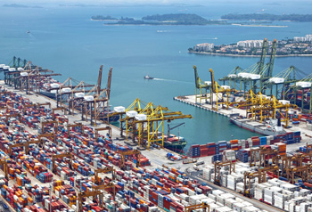
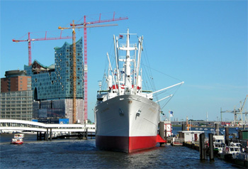
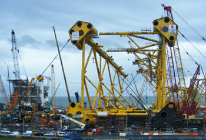

연구 소개
극지형 아틱드릴십
- 세계 최초의 극지형 아틱드릴쉽 개발
- 외부 온도 -40도, 설계온도 -50도인 최초의 아틱드릴쉽을 개발하여 혹독한 환경에서도 시추작업이 가능한 해양구조물입니다. 모노코크 형상의 선체 형상과 더불어 이를 바탕으로 구성된 밀폐형 데릭을 가지는 구조로 최소한의 에너지로 선박과 작업자들이 이상 없이 작업할 수 있도록 설계된 해양 시추 선박입니다. 지구 온난화로 북극해 얼음 두께가 얇아지면서 자원개발이 다소 용이해지자 극한(極寒)의 상황에서도 시추작업이 가능한 해양구조물을 개발한 것입니다.외부 온도 -40도, 설계온도 -50도인 최초의 아틱드릴쉽을 개발하여 혹독한 환경에서도 시추작업이 가능한 해양구조물입니다. 모노코크 형상의 선체 형상과 더불어 이를 바탕으로 구성된 밀폐형 데릭을 가지는 구조로 최소한의 에너지로 선박과 작업자들이 이상 없이 작업할 수 있도록 설계된 해양 시추 선박입니다. 지구 온난화로 북극해 얼음 두께가 얇아지면서 자원개발이 다소 용이해지자 극한(極寒)의 상황에서도 시추작업이 가능한 해양구조물을 개발한 것입니다.
해상풍력발전기 설치선
- DSME 표준형 해상풍력발전기 설치선
- 플랫폼 형태의 차세대 해상풍력발전기 설치선을 대우조선해양만의 독자 모델로 개발을 완료. 기존 설치선에 비해 한단계 진화한 개념으로 육상 건조한 해상풍력발전기를 운송·설치함으로써 작업 효율을 높이고 비용을 줄여 해상 풍력단지 개발분야에서 큰 활약을 할 것으로 기대됩니다. 이 설치선은 독일 RWEI로부터 수주한 것과 같은 형태이나 규모가 훨씬 큰 길이 145m, 폭 45m에 달하며, 5MW급 해상풍력발전기 5기를 싣고 최대 11노트(시속 20km) 속력으로 운항할 수 있습니다. 특히 DSME형 설치선 개발은 선주가 요구하는 스펙에 따라 건조하는 것이 아니라, 경쟁력 있는 모델을 먼저 제시할 수 있어 이 분야의 시장을 선도할 수 있어 그 의의가 깊습니다.플랫폼 형태의 차세대 해상풍력발전기 설치선을 대우조선해양만의 독자 모델로 개발을 완료. 기존 설치선에 비해 한단계 진화한 개념으로 육상 건조한 해상풍력발전기를 운송·설치함으로써 작업 효율을 높이고 비용을 줄여 해상 풍력단지 개발분야에서 큰 활약을 할 것으로 기대됩니다.
원자력 추진선
- 원자력을 추진동력으로 활용하는 차세대 선박
- 기존의 화석 연료를 대체하여 원자력을 추진 동력으로 활용하는 선박입니다. Ice breaker, Arctic tanker, Container ship 다양한 선박의 화석연료 엔진을 대체 할 수 있어 그 적용범위는 대단히 넓다하겠으며 Mining vessel, Subsea plant 등에서도 동력으로 활용 가능합니다.배 위에 탑재된 재기화 설비를 이용해 싣고 온 액체 상태의 LNG를 육상에서 바로 쓸 수 있도록 기화한 다음, 해상에 설치된 터미널에 연결하여 육상으로 바로 공급할 수 있습니다. LNG RV 의 건조를 위해서는 선박건조자(대우조선해양), 선주(엑스마사), 운영회사(엑셀러레이트 에너지)가 있으며, LNG선의 건조와 LNG터미널의 건설, 정유, 가스 FPSO, 원유 셔틀탱크의 정박 및 하역기술 등 다양한 관련기술이 사용됐습니다. 동력으로 활용 가능합니다.배 위에 탑재된 재기화 설비를 이용해 싣고 온 액체 상태의 LNG를 육상에서 바로 쓸 수 있도록 기화한 다음, 해상에 설치된 터미널에 연결하여 육상으로 바로 공급할 수 있습니다.
nuclear ship propulsion process
- nuclear reactor
- steam generator
- steam turbine
- electric generator
- electric propulsion motor
- propulsion (propeller)
발전플랜트기술
- 발전플랜트를 설치하여 전기를 생산하는 발전설비
- BMPP(Barge Mounted Power Plant)는 세계 제일의 조선/해양 기술을 기반으로 설계/제작된 발전 설비로써, 일반 육상 발전소 대비 최적화된 Layout 및 설치 지형적 제약에서 자유롭습니다. 석탄, 가스, 원자력등 다양한 원료를 기반으로 한 발전 설비를 탑재할 수 있으며, 조선소 내 건조를 통해 품질 향상은 물론 공사 기간을 단축 시킬 수 있는 큰 장점을 보유하고 있습니다. 석탄, 가스, 원자력등 다양한 원료를 기반으로 한 발전 설비를 탑재할 수 있으며, 조선소 내 건조를 통해 품질 향상은 물론 공사 기간을 단축 시킬 수 있는 큰 장점을 보유하고 있습니다. 석탄, 가스, 원자력등 다양한 원료를 기반으로 한 발전 설비를 탑재할 수 있으며, 조선소 내 건조를 통해 품질 향상은 물론 공사 기간을 단축 시킬 수 있는 큰 장점을 보유하고 있습니다.
-
-  조선소 내 플랜트 건설
-  해상 운송
-  현지 설치
- BMPP는 설치 지형에 따라 탄력적인 설치 방법이 가능합니다. 대표적으로 Off-shore와 On-shore 방법으로 구분되며, Off-shore 설치 방법은 전력이 필요한 해안가에 접안 하여 운용 또는 원근해에 Floating 조건으로 운용되는 방법으로 현지 토목 작업, 지역 주민 반발 효과를 절감할 수 있는 장점이 있습니다. On-shore 설치 방법은 BMPP 제작 후, 육상에 기 시공된 Dock 설비에 안착시키는 방법으로써, 극한의 해양 환경 조건에 대비해 안정적인 전력 공급을 할 수 있는 기대 효과가 있습니다. 대우조선해양이 보유한 모델은 PFBC(Pressurized Fluidized Bed Combustion), CFBC(Circulating Fluidized Bed Combustion) 보일러를 탑재한 Coal Fired BMPP와 Natural Gas를 이용한 SC(Simple Cycle) BMPP, CC(Combined Cycle) BMPP, 혼합 연료 사용이 가능한 DFE(Dual Fuel Engine) BMPP가 있습니다. 또한 CCS(Carbon Capture & Storage) 기술을 각 발전 타입 별 모델에 접목하여 미래 환경 보존에 대응할 수 있는 친환경 발전 설비 구축이 가능합니다. 각 BMPP 타입은 주문주가 요구하는 용량에 따라 맞춤 설계/제작이 가능하며, 다양한 용량 별 타입 모델에 대해 개발 완료하였습니다.
로봇기술
- Vision 2020, 고성능 로봇의 상용화 추진
- 소형/경량의 강인한 기구설계, 지능형 센서시스템, 실시간 제어, 시스템 통합운영 등의 핵심기술력을 바탕으로 Vision 2020 전략의 4대분야(조선,해양,플랜트,에너지) 생산성 향상에 필요한 고성능 로봇 및 전문서비스로봇, 해양로봇 등과 같은 New Business 로봇의 개발적용과 상용화를 추진하고 있습니다.새롭게 적용된 공법에서 해상크레인의 사용이 활성화됨은 자연히 블록의 대형화를 이루어졌으며, 2001년 대우조선해양에서는 링 공법을 적용하여 하여 1000톤이상의 대형블록을 제작하여 Dry Dock와 플로팅 도크 블록을 탑재하기 시작 하였습니다. 소형/경량의 강인한 기구설계, 지능형 센서시스템, 실시간 제어, 시스템 통합운영 등의 핵심기술력을 바탕으로 Vision 2020 전략의 4대분야(조선,해양,플랜트,에너지) 생산성 향상에 필요한 고성능 로봇 및 전문서비스로봇, 해양로봇 등과 같은 New Business 로봇의 개발적용과 상용화를 추진하고 있습니다.새롭게 적용된 공법에서 해상크레인의 사용이 활성화됨은 자연히 블록의 대형화를 이루어졌으며, 2001년 대우조선해양에서는 링 공법을 적용하여 하여 1000톤이상의 대형블록을 제작하여 Dry Dock와 플로팅 도크 블록을 탑재하기 시작 하였습니다.